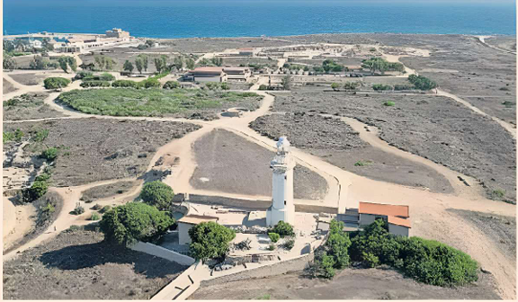
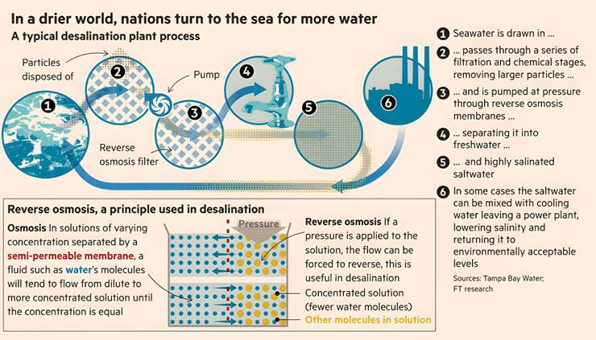

Each morning, Christos Papapetrou looks to the sky. “We all do,” says the head of Cyprus’s farmers’ union. “We're hoping for clouds, for rain.” But as their island enters a third consecutive year of drought, there is little sign of either.
This summer, for the first time in recent memory, Cyprus will be forced to import tomatoes, watermelons and other produce it has long grown, because farmers cannot irrigate. The government has halved agricultural water allocations, cutting off seasonal crops entirely. “We’ve accepted it,” Papapetrou says. “But let’s not pretend this is just a farmers’ problem. It affects the whole country. Prices will soar.”
As climate change makes rains more erratic and groundwater sources run low, governments across the world are seeking solutions to keep the taps running — a boon for the fast-growing desalination industry, which market researchers think will exceed $20bn in 2027. In 2024, it was estimated at less than $15bn.
In Cyprus, years of under-investment, fragmented policymaking and reliance on rainfall have brought the water system close to collapse. As of early June, the country’s 18 main reservoirs were just 21.7 per cent full. Five years ago, that figure was 97 per cent.
Doubling down on energy-intensive desalination is now seen as the only viable option. Cyprus already has four large-scale desalination plants that it operates during water scarcity. Maria Panayiotou, the country’s agriculture minister, has made desalination the centrepiece of a 28-point emergency water plan, aiming to meet all of Cyprus’s drinking water needs through desalination within two to three years by operating the units continuously.
The southern European state is just one country in a widening water-stressed zone, loosely encircling the globe from India across to North America, with parts of the Pacific and southern Africa also affected. An estimated one in 10 people now lives in a country with what the UN’s water agency classifies as “high and critical water stress.”
As populations and economies grow, “societies are becoming thirstier and thirstier”, says Kaveh Madani, director of the UN University Institute for Water, Environment and Health. “We have limited renewable water supplies that are now becoming even more limited than before thanks to climate change.”
‘Now we're even thinking about desalinating and transferring water for 800km. This is how desperate people are.’
The desalination process has improved drastically in recent decades, finally pulling away from the ancient technique of boiling seawater to more sophisticated technology, reverse osmosis, that uses microscopic pores in specially designed membranes to filter out salt. Professor Nidal Hilal, director of the Water Research Center at New York University Abu Dhabi, estimates that global growth in desalination capacity is between 6 and 12 per cent annually.
But both the older thermal technique and the newer version have the same problems: they require large amounts of energy to power the plants, and the process produces pollution in the form of ultra salty water.
Now, with demand rising, companies and governments from the Middle East and beyond are ploughing billions into scaling up the desalination infrastructure needed in a warmer, drier world, while wrestling with the technology’s unpalatable side-effects. “It produces a lot of brine. It affects the ecosystem. Significantly,” says Madani.
Yet for some countries, desalination is the only answer. “Now we're even thinking about desalinating and transferring water ... like transferring water for 800km,” he adds. “It sounds crazy, but this is how desperate people are.”
The driving force behind desalination’s modernisation are the communities around the Gulf, whose existence depends on the process. The oil-rich Gulf state of Kuwait, which has no permanent rivers and was once forced to ship freshwater in from neighbouring Iraq, pioneered the technology in the Middle East by commissioning its first desalination plant in 1951. Similarly parched neighbours quickly followed suit. Today the arid Middle East and North Africa region accounts for about 70 per cent of global desalination capacity, according to the EU Blue Economy Observatory. The region’s largest plants can produce enough water to supply more than 1 million people.
Below the undulating surface of the Arabian Sea, thousands of cubic metres of water flow into pipes tall enough for a person to stand up in, running over a kilometre back to Oman’s biggest desalination plant, Barka IV, which uses reverse osmosis. Getting the seawater into the plant is difficult. It has to be siphoned gently, to avoid drawing in sea creatures. A wall of bubbles billows around the intake pipes to ward off jellyfish.
The salty water that flows into tanks is green with algae, which must be pushed to the surface using air bubbles, creating a sludgy carpet that can be skimmed off before filtration.
This pre-treatment must be completed before the water is pushed at high pressure through delicate membranes. After that, minerals are added to the pure water. The leftover super-salty brine is diffused back into the sea.
The sea in the Gulf is “the hardest water to desalinate on the planet,” according to Hilal of NYU Abu Dhabi. The semi-enclosed Gulf is much saltier than larger, more open bodies of water. And “the higher the salt concentration, the more energy is required for desalination,” Hilal says, adding that the situation is aggravated by the water's high “turbidity” or cloudiness, due to the sea’s shipping routes and the presence of wastewater.
A typical desalination plant process
Reverse osmosis — if pressure is applied to the solution, the flow can be forced to reverse; this is useful in desalination.
Sources: Tampa Bay Water
The industry has attempted to reduce energy consumption by switching to reverse osmosis, like at Barka IV, which is far less intensive. “It’s around a fourth, or a fifth even, of the energy required for the thermal desalination technology,” explains Hilal. “The membrane technology has developed a lot and we are still, in my opinion, on the surface of it.”
Reducing energy consumption has made producing desalinated water less polluting in terms of greenhouse gas emissions, and reduced the costs. In Israel, water produced by the Sorek B desalination plant is priced at about 40 cents per cubic metre, which is enough for 25 showers, according to Thames Water. Dubai utility Dewa will get a price of 37 cents per cubic metre for water from its Hassyan desalination plant, which is due to start operations next year.
“We've put a lot of money in R&D... to be able to reduce this energy consumption," says Estelle Brachlianoff, chief executive officer of energy and water company Veolia. “We've divided [the cost] by five in the last 12 years.”
The €22.4bn French multinational is one of the utility and engineering companies profiting from the world’s increasing water fragility. The company says 18 per cent of global desalination capacity already runs on its technology.
Academic researchers are focusing on improving the membranes by looking for materials and techniques to prevent them getting clogged up with residue, which shortens their lifespans.
And there are hopes reverse osmosis desalination can be made even more energy efficient. In the US, so-called deep-sea desalination is being piloted, using the pressure of the ocean itself to push seawater through the membranes.
But the benefits of cheaper desalination are not enjoyed by all. Cyprus is using reverse osmosis but imports fossil fuels to power it, meaning each cubic metre costs €1.50 to produce — almost five times as much as the new Hassyan plant in Dubai.
The government plans to retrofit pumping stations with solar panels, but space on the island is limited and its grid lacks the storage capacity to support more water.
Seawater is drawn in...
passes through a series of filtration and chemical stages, removing larger
particles ...
and is pumped at pressure through reverse osmosis membranes ...
Separating it into freshwater ...
and highly salinated saltwater
In some cases the saltwater can be mixed with cooling water leaving a power
plant, lowering salinity and returning it to environmentally acceptable levels
Reverse osmosis - If a pressure is applied to the solution,
the flow can be forced to reverse, this is useful in desalination.
Sources: Tampa Bay Water
“Desalination can’t run in fits and starts,” Panayiota Hadjigeorgiou, former head of the water development department, says. “It needs reliable power.”
The Gulf is still reliant on the older technology, which has a long lifespan. Dubai, the Arab Gulf’s second-biggest city by population after Riyadh, gets 86 per cent of its desalinated water from thermal distillation.
Companies in the region say they want to change this. Taga, the Abu Dhabi utilities company that provides the city with desalinated water, aims to have 66 per cent of its desalination capacity use reverse osmosis by 2030, up from 40 per cent today. It has also added 70 megawatts of solar power to its vast Taweelah plant, which uses reverse osmosis, to reduce its use of fossil fuels.
“It’s a priority for us that we be more efficient,” says Taqa’s chief executive, Jasim Husain Thabet. “Therefore we are rolling out more reverse osmosis” and eyeing other initiatives including reusing wastewater and curbing losses from leaking pipes.
Even as emissions from desalination fall, there is the intractable problem of brine, the ultra-salty substance left behind after pure water is extracted.
Desalination worldwide produces 150 million cubic metres of brine per day, according to scientific research. This thick, milky liquid is generally dumped back into the sea. One study has linked desalination brine with coral bleaching in the Gulf of Aqaba and others have found impacts on marine life on the sea bed around discharge points.
Cyprus is particularly worried about brine’s impact on the Mediterranean.
“For every cubic metre of freshwater, nearly half a cubic metre of brine is discharged,” says Hadjigeorgiou. The island uses offshore pipelines and diffusers to spread the brine up to 2km from the coast, away from sensitive ecosystems, and “there’s no evidence of damage so far, but we must stay vigilant,” she says.
In the small, shallow Gulf, which feeds more than 800 desalination plants, jettisoning brine has led to concerns about rising salt concentration and the impact on sensitive species.
“There are challenges with brine discharge,” acknowledges Taqa’s Thabet. “It’s not limited to us, it is an industry-wide problem that needs a collective action.”
Academics in Saudi Arabia, the world’s biggest desalinated water producer, are trying to tackle the brine problem. Zhiping Lai, a professor at the King Abdullah University of Science and Technology, is mining the brine for valuable elements. His team has published in the journal Science a novel method for extracting lithium, which is used in making batteries, and Lai has established a start-up to try to commercialise the new technique.
“In principle if we could extract lithium from this brine, it could enhance economic viability to solve this issue,” says Lai. Although lithium is found in very low concentrations in brine, “the kingdom is willing to spend efforts to solve this challenge.”
With desalination such a high priority in the Gulf, Veolia boss Brachlianoff says governments there have found successful models for contracting and financing the projects. These are usually private-public partnerships with “specific financing, specific take or pay models from the customer”. She highlighted the UAE, which has awarded three projects to Veolia in recent years, all through private-public partnership models.
Veolia says the Middle East market was its fastest growing last year across its different services. “Water technologies is one of its fastest-growing services worldwide, with reported sales of nearly €5bn last year.”
The Middle East “was always aware that water was something absolutely needed for industry. So we have desalination plants to serve refineries in the Middle East, not only to serve the population or to serve industries,” says Brachlianoff. “This realisation that you need water for everything, of course, [is one on] which Europe is quite behind.”
Veolia has plenty of multinational competitors. Spain’s Acciona, whose water division had 2024 revenues of €1.2bn, has contracts to run desalination plants from Perth, Australia, to Qatar and a market capitalisation of €9.3bn. South Korea’s Doosan Enerbility also operates desalination facilities across the Gulf.
Middle Eastern infrastructure builders are also looking to export their desalination expertise. Riyadh-listed ACWA Power is the region’s biggest power and water developer. It says it controls more than a quarter of the desalinated water in Saudi Arabia, the UAE, Oman and Bahrain. “We are now looking abroad [beyond the Gulf],” says Marco Arcelli, chief executive. “We hope to be signing soon agreements in Azerbaijan, Senegal. We're looking at projects in China, in Malaysia, in the Philippines.”
Yet some experts warn that desalination, while profitable for companies, is far from the sole solution to water shortages. Countries are also investing in improving water infrastructure.
The European Investment Bank, for example, lent some €400m to water projects in Spain last year, which paid for the renovation or installation of 2,000km worth of pipes. Between 2023 and 2024, the drought-affected state of California spent $63m on water recycling, capture and storage projects.
“We have the commercial system and we have the desperate governments on the other side,” says Madani, the UN University official. “It’s much easier to increase supply than cut consumption.”
He adds that reducing water use and harnessing wastewater are also critical. “Desalination can play and will play a major role… But it’s not the solution. That means building the biggest desalination plant in your country is not necessarily something to celebrate.”
Graphic illustration by Ian Bott